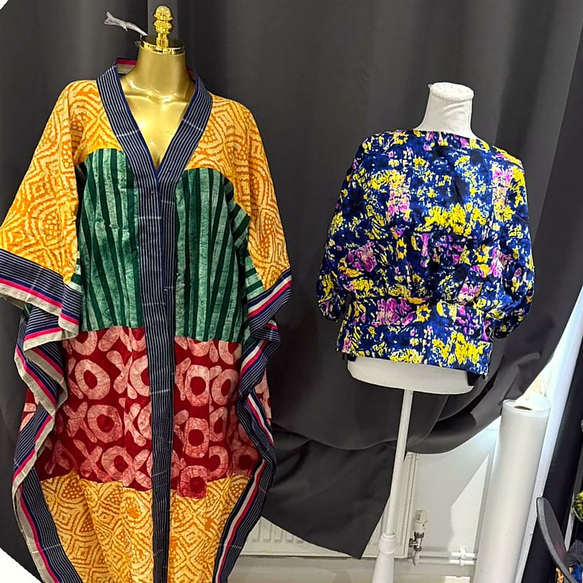

4+
Years Crafting Vision
/ Our Story
Rooted in Ghana,
Cut in Britain
GeoDor Fashion is the label of designer Vera Amoako: Ghanaian-trained, Milton Keynes-based, and devoted to the craft of the hand.
Vera trained in fashion design at KNUST in Kumasi, Ghana, before bringing her practice to the UK. Her work combines denim and sharp tailoring with Ankara, the bold West African wax print, finished with sculptural, hand-folded details that have become the GeoDor signature.
The same discipline runs through her industry experience in sample production, where precision and getting it right first time are everything. Every GeoDor piece is held to that standard.
Vera Amoako
Founder & Designer